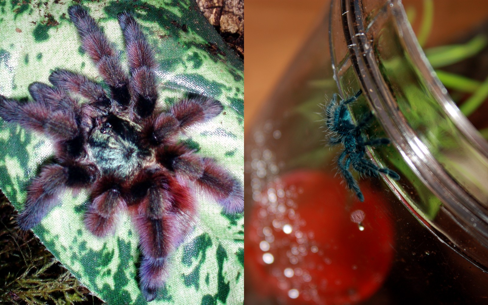

An arboreal Martinique endemic. It constructs silk retreats in elevated cavities and among vegetation rather than living as a ground-level burrower.
Species archive · Previously kept
Caribena versicolor
Antilles pinktoe tarantula
An arboreal tarantula endemic to Martinique, famous for changing from electric blue as a juvenile to a layered green, magenta, and red adult palette. These photographs come from my former collection.
Not currently in the Introvertebrates collection

Accepted nameCaribena versicolor
FamilyTheraphosidae
Native rangeMartinique
LifestyleArboreal · retreat-building
Collection statusPreviously kept
In the wild
Natural history.
Ontogenetic colour change is dramatic: vivid blue juveniles mature into green, purple, magenta, and red adults with pink-tipped feet.
The image is mine and the animal was once in my care. It is not a current resident; the profile is a species resource, not a live collection record.
Taxonomy and range
The World Spider Catalog recognises Caribena versicolor (Walckenaer, 1837) as an accepted species endemic to Martinique. It was long known as Avicularia versicolor and was transferred to the newly established genus Caribena in a major 2017 revision.
Retreats, shelter, and activity
Field records place the species mainly in mesophyll forest. Individuals build silken retreats among bromeliad leaves and on branches, bamboo, tree trunks, and occasionally human structures—microhabitats that provide height, anchoring points, and a protected tube.
Feeding ecology
It is an opportunistic sit-and-wait predator of small animals encountered on vegetation. The retreat acts as both shelter and a sensory structure, carrying vibrations that help the spider detect movement nearby.
A name preserved in the photo archive
These photographs were filed under the older name Avicularia versicolor. Keeping that history visible is useful: scientific names can change as new evidence reshapes relationships, while the animal and the observation remain the same.
Continue exploring
Related profiles.

Read further
Sources.
- World Spider Catalog — Caribena versicolor Accepted taxonomy, synonymy, and distribution.
- Fukushima & Bertani — Aviculariinae revision Genus transfer, diagnosis, habitat, and retreat records.